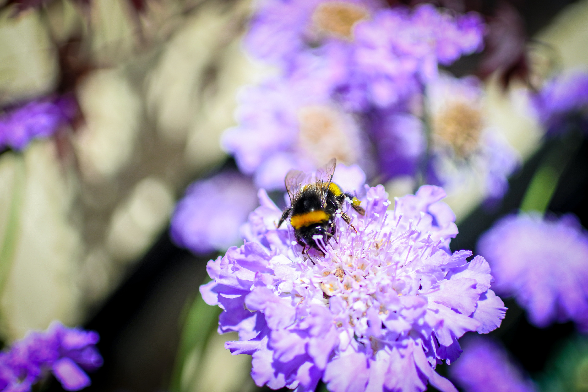

By Erik Stokstad | May 21, 2020 , 2:05 PM
When bumble bee queens emerge from hibernation, they need to gather pollen and nectar to start their new colonies. If they wake up too soon, there may not be enough flowers in bloom. Now, researchers have discovered the bees have a way to order some fast food: They nibble holes in leaves, spurring plants to blossom weeks ahead of schedule. Many questions remain about the details of this strategy and how it evolved.
"It's certainly surprising," says Lars Chittka, a behavioral ecologist at the Queen Mary University of London, who was not involved. "We're only at the beginning of exploring this phenomenon."
Researchers at ETH Zurich chanced upon the discovery when they noticed curious bite marks on leaves while studying how bees respond to plant odors. They had added bumble bees to a research greenhouse and observed them cutting holes in the shape of half-moons. What was going on? At first, the researchers thought the insects might be feeding on fluid from the leaves, but the bees didn't stay long enough to get much. Nor did they appear to be taking any part of the leaves back to their colonies.
A key observation-that bumble bees from colonies with less food were more avidly damaging the leaves-suggested another goal. The researchers wondered whether the damage triggered the plants to flower sooner, providing pollen to the hungry pollinators. After all, some plants speed up their flowering when they are stressed by disease or drought because these threats provide an incentive to reproduce sooner. But no one had ever shown that a pollinator can stimulate flowering. "I thought it was a long shot," recalls Mark Mescher, an evolutionary biologist at ETH Zurich who co-led the research.
The researchers set up a greenhouse experiment with black mustard (Brassica nigra), a crop they had been studying. Ten plants were put in mesh bags with bumble bees that hadn't eaten any pollen for 3 days; they proceeded to nibble five to 10 holes in each plant. On average, those plants flowered after 17 days; undamaged plants that had not been exposed to bumble bees took an average of 33 days, the researchers report today in Science. In a similar experiment, tomato plants sped up their flowering by 30 days. "The magnitude of the effects is huge," Mescher says.
Hunger seems to be driving the bees: Another lab experiment showed that pollen-deprived bumble bees cut about four times as many holes as bumble bees that were fully fed. When the researchers put potted plants and a colony of bees on a roof at the ETH Zurich campus in early spring, before flowers were blooming, the bumble bees cut holes in the leaves. But as spring progressed, making more pollen available, the bees made fewer new holes. The researchers also noticed two wild species-red-tailed and white-tailed bumble bees-puncturing leaves, suggesting the behavior may be widespread. "That was superexciting," says Consuelo De Moraes, a chemical ecologist at ETH Zurich who co-led the research.
To find out whether the leaf damage alone triggers the plants to flower sooner, the researchers cut similar-size holes in leaves. Those plants flowered earlier than controls, but not as early as the ones bitten by bumble bees. An intriguing possibility, Chittka says, is that bee saliva might contain chemicals that prompt flowering-similar to chemicals in the saliva of plant-eating insects that prompt plant defense responses. The researchers hope to investigate that idea and to study chemical signaling inside the plants after they are bitten. "It would be a horticulturist's dream if you could find some relatively low-cost biochemistry that would actually speed up flowering," Chittka says.
But researchers are still puzzled about how such behavior, which may also benefit the plants by attracting early pollinators, evolved. It's unlikely worker bees learn the trick: They live only 1 month and wouldn't have enough time to see the results of their handiwork. If the behavior is instinctive, it's hard to understand how it would have started, Chittka says. What initial benefit, for example, would damaging leaves have brought to the bees? Finally, to help their own colony (rather than distant ones), bees would need to keep their nibbling close to home. "For all of this to somehow have come about by evolutionary trial and error process,""Chittka says, "it's surprising."